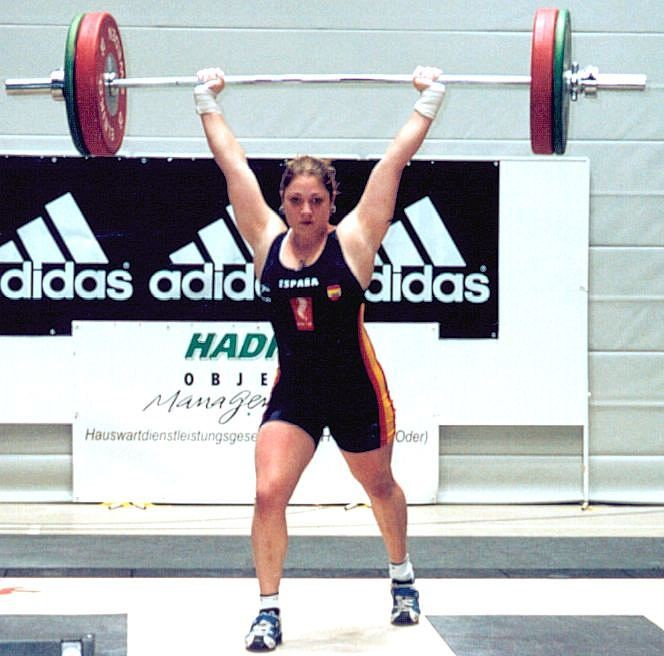
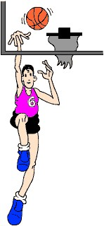
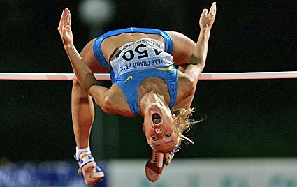

LA FUERZA
Es una de las cualidades físicas más importantes ya que está presente en cualquier acción, tanto deportiva, como de la vida cotidiana.
La podemos definir como "la capacidad del ser humano de vencer, o contrarrestar una resistencia externa a través de la contracción de sus músculos".
Veamos algunos ejemplos de situaciones en las que se necesita esta cualidad en la vida cotidiana:
1. Cargar con las bolsas de la compra desde el supermercado hasta casa.
2. Llevar la mochila llena de libros hasta el colegio.
Veamos algunos ejemplos de situaciones en las que se necesita esta cualidad en el deporte:
1. Realizar un saque de banda en fútbol.
2. Salto de altura en Atletismo.
3. Lanzamiento de peso en Atletismo.
4. Lanzamiento a portería en balonmano, etc.
Tipos de fuerza:
- Fuerza máxima. Fuerza más alta que se puede manifestar en una contracción muscular. Por ejemplo, halterofilia.

- Fuerza explosiva. A esta cualidad también se la conoce con el nombre de Potencia. Un ejemplo típico de este tipo de fuerza son los saltos, golpeos, lanzamientos, etc. Hay muchos deportes que necesitan de este tipo de fuerza como por ejemplo el Futbol, el Baloncesto, el Balonmano, etc.


- Fuerza resistencia. Este tipo de fuerza es la más indicada para mejorar la salud. Ejemplos de deportes que necesitan de este tipo de fuerza son la escalada, el judo, esquí, etc.
En función del deporte que practiquemos necesitaremos desarrollar una u otra clase de fuerza; pero lo más importante que hay que saber es que a vuestra edad no se debe trabajar nunca con cargas máximas o elevadas ya que sería perjudicial para vuestro crecimiento (el hueso crece inversamente a la carga que soporta).